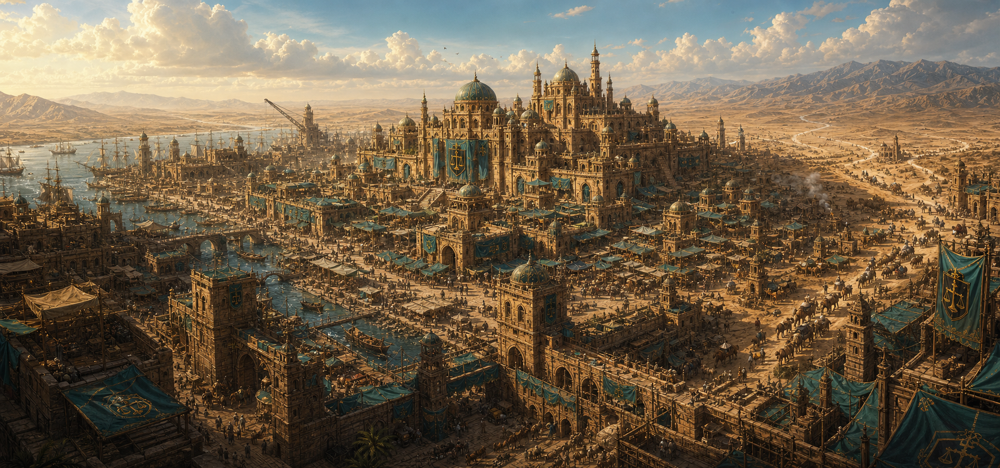

Знания / Право
Картур
Нерушимая торговая клятва Маркора и один из важнейших терминов языка Кхарак.

Происхождение
Картур происходит от корней Кхарака: кар - путь и торговля, тур - клятва и нерушимость.
Значение
В Маркоре любой Картур считается священным. Его нарушение автоматически делает человека врагом всех пяти картелей.
Цена нарушения
Картур держит страну вместе лучше короны. Именно поэтому его боятся даже те, кто презирает закон.